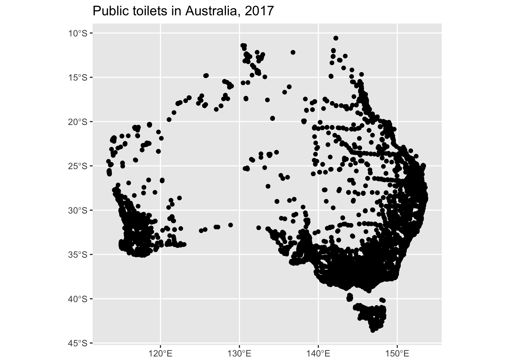

🚧 First warning! The notaurin package is not affiliated with AURIN. 🚧
🚧 Second warning! The old aurin package which is also not affiliated with AURIN will be retiring from CRAN by 26th of May 2022 as per AURIN’s request. However, the new notaurin package will make its way to CRAN before that to make sure this transition is as unintrusive as possible 🚧
The goal of notaurin is to provide an easy way for R users to access MORE THAN 5000 OPEN DATASETS on AURIN using their API. You can request a FREE API key from:
AURIN is “Australia’s :kangaroo: single largest resource for accessing clean, integrated, spatially enabled and research-ready data on issues surrounding health and wellbeing, socio-economic metrics, transportation, and land-use.”
Installation
Here are ways you can install notaurin:
# from CRAN for the latest version
install.packages("notaurin")
# from GitHub for the latest development version
install.packages("remotes")
remotes::install_github("asiripanich/notaurin")This package requires the sf package. Please see the sf package’s GitHub page to install its non R dependencies.
Example
Let’s recreate this AURIN API AND R example using notaurin.
First, you must add your AURIN API username and password as an R environment variable to your .Renviron file. notaurin provides aur_register() function to help you with this step. If you choose to set add_to_renviron = TRUE you won’t need to run this step again on current machine after you restart your R session.
library(notaurin)
# add_to_renviron = TRUE, so you won't need to run this step again on current machine.
aur_register(username = "your-username", password = "your-password", add_to_renviron = T) aur_browse() opens the data catalogue of AURIN on your default browser.
Identify the ‘AURIN Open API ID’ field on the ‘Additional Info’ table of the dataset that you want to download. For example, for this public toilet 2017 dataset its ‘AURIN Open API ID’ field is "aurin:datasource-UQ_ERG-UoM_AURIN_DB_public_toilets".
Note that, some datasets on AURIN may not have ‘AURIN Open API ID’, meaning that it cannot be downloaded via their API.
Alternatively, you may use aur_meta to search datasets without leaving your R console.
meta <- aur_meta()
#> ℹ Creating AURIN WFS Client...
#> Loading ISO 19139 XML schemas...
#> Loading ISO 19115 codelists...
#> Loading IANA mime types...
#> No encoding supplied: defaulting to UTF-8.
#> ℹ Fetching available datasets...
# print out the first five rows
knitr::kable(head(meta))| aurin_open_api_id | title |
|---|---|
| aurin:datasource-NSW_Govt_DPE-UoM_AURIN_DB_nsw_srlup_additional_rural_2014 | Additional Rural Village Land 18/01/2014 for NSW |
| aurin:datasource-AU_Govt_ABS-UoM_AURIN_DB_GeoLevel_aus_2016_aust | ABS - ASGS - Country (AUS) 2016 |
| aurin:datasource-AU_Govt_ABS-UoM_AURIN_DB_GeoLevel_gccsa_2011_aust | ABS - ASGS - Greater Capital City Statistical Area (GCCSA) 2011 |
| aurin:datasource-AU_Govt_ABS-UoM_AURIN_DB_GeoLevel_gccsa_2016_aust | ABS - ASGS - Greater Capital City Statistical Area (GCCSA) 2016 |
| aurin:datasource-AU_Govt_ABS-UoM_AURIN_DB_GeoLevel_mb_2016_aust | ABS - ASGS - Mesh Block (MB) 2016 |
| aurin:datasource-AU_Govt_ABS-UoM_AURIN_DB_GeoLevel_mb_2011_act | ABS - ASGS - Mesh Block (MB) ACT 2011 |
Use aur_get() to download the dataset.
# download this public toilet dataset.
open_api_id <- "aurin:datasource-UQ_ERG-UoM_AURIN_DB_public_toilets"
public_toilets <- aur_get(open_api_id = open_api_id)
#> ℹ Downloading 'aurin:datasource-UQ_ERG-UoM_AURIN_DB_public_toilets'...
#> ✔ Finished!
state_polygons <- aur_get(open_api_id = "aurin:datasource-AU_Govt_ABS-UoM_AURIN_DB_GeoLevel_ste_2016_aust")
#> ℹ Downloading 'aurin:datasource-AU_Govt_ABS-UoM_AURIN_DB_GeoLevel_ste_2016_aust'...
#> ✔ Finished!
state_polygons <- state_polygons[state_polygons$state_code_2016 %in% 1:8, ]Let’s visualise the data using the ggplot2 package.
# If you don't have the package you can install it with `install.packages("ggplot2")`.
library(ggplot2)
ggplot(public_toilets) +
geom_sf(data = state_polygons, fill = "antiquewhite") +
geom_sf(alpha = 0.05, aes(color = status)) +
labs(title = "Public toilets in Australia, 2017") +
scale_color_brewer(palette = "Dark2") +
theme_bw() +
guides(colour = guide_legend(override.aes = list(alpha = 1))) +
theme(panel.background = element_rect(fill = "aliceblue"))
See here to find available datasets.
Download multiple datasets in parallel
When there are many datasets that you need to download, you may want to put all of your CPUs to work. The code chucks below show how you can download multiple datasets in parallel using the {furrr} and {future} packages.
First, setup the workers - this affects how many datasets you can download in parallel at the same time. The maximum number of workers of your machine can be determined using future::availableCores().
library(furrr)
#> Loading required package: future
library(future)
future::plan(future::multiprocess, workers = 2)
#> Warning: Strategy 'multiprocess' is deprecated in future (>= 1.20.0). Instead,
#> explicitly specify either 'multisession' or 'multicore'. In the current R
#> session, 'multiprocess' equals 'multicore'.Let’s assume you want the first 10 rows of all datasets on AURIN with the word “toilet” in their title.
| aurin_open_api_id | title | |
|---|---|---|
| 1463 | aurin:datasource-AU_Govt_DSS-UoM_AURIN_national_public_toilets_2017 | DSS - National Public Toilets (Point) 2017 |
| 1523 | aurin:datasource-AU_Govt_Doh-UoM_AURIN_DB_national_toilet_map_2018_06 | Department of Health - National Toilet Map - June 2018 |
| 3013 | aurin:datasource-UQ_ERG-UoM_AURIN_DB_public_toilets | Public Toilets 2004-2014 for Australia |
Extract their AURIN open API ids and download all of them in parallel.
toilet_datasets_ids <- meta$aurin_open_api_id[grepl("toilet", meta$title, ignore.case = T)]
data_lst <- furrr::future_map(toilet_datasets_ids, ~ aur_get(.x, params = list(maxFeatures = 10)))
#> ℹ Downloading 'aurin:datasource-AU_Govt_DSS-UoM_AURIN_national_public_toilets_2017'...
#> ✔ Finished!
#> ℹ Downloading 'aurin:datasource-AU_Govt_Doh-UoM_AURIN_DB_national_toilet_map_2018_06'...
#> ✔ Finished!
#> ℹ Downloading 'aurin:datasource-UQ_ERG-UoM_AURIN_DB_public_toilets'...
#> ✔ Finished!
data_lst
#> [[1]]
#> Simple feature collection with 10 features and 46 fields
#> Geometry type: POINT
#> Dimension: XY
#> Bounding box: xmin: 115.811 ymin: -38.1744 xmax: 153.1177 ymax: -27.9314
#> Geodetic CRS: WGS 84
#> # A tibble: 10 × 47
#> id toilet_id url name address1 town state postcode address_note male
#> <chr> <int> <chr> <chr> <chr> <chr> <chr> <int> <chr> <lgl>
#> 1 datas… 341 http… Elsi… Alden S… Clif… Quee… 4361 <NA> TRUE
#> 2 datas… 418 http… Luck… Lucky B… Luck… Sout… 5602 <NA> TRUE
#> 3 datas… 634 http… Olds… Holley … Mort… New … 2223 <NA> TRUE
#> 4 datas… 1150 http… Jaeg… Hill St… Oran… New … 2800 <NA> TRUE
#> 5 datas… 1207 http… Lake… Evans S… Shen… West… 6008 <NA> FALSE
#> 6 datas… 1535 http… Earl… Earl St… Coff… New … 2450 <NA> TRUE
#> 7 datas… 1590 http… Truc… Davidso… Deni… New … 2710 <NA> TRUE
#> 8 datas… 1913 http… Hemi… High St… Belm… Vict… 3216 <NA> TRUE
#> 9 datas… 2081 http… Eden… Eden Va… Keyn… Sout… 5353 The toilet … TRUE
#> 10 datas… 2377 http… Wils… Wilson … Watt… Vict… 3096 <NA> TRUE
#> # … with 37 more variables: female <lgl>, unisex <lgl>, dump_point <lgl>,
#> # facility_type <chr>, toilet_type <chr>, access_limited <lgl>,
#> # payment_required <lgl>, key_required <lgl>, access_note <chr>,
#> # parking <lgl>, parking_note <chr>, accessible_male <lgl>,
#> # accessible_female <lgl>, accessible_unisex <lgl>, accessible_note <chr>,
#> # mlak <lgl>, parking_accessible <lgl>, access_parking_note <chr>,
#> # ambulant <lgl>, lh_transfer <lgl>, rh_transfer <lgl>, adult_change <lgl>, …
#>
#> [[2]]
#> Simple feature collection with 10 features and 47 fields
#> Geometry type: POINT
#> Dimension: XY
#> Bounding box: xmin: 115.8314 ymin: -36.7422 xmax: 153.2881 ymax: -26.6443
#> Geodetic CRS: WGS 84
#> # A tibble: 10 × 48
#> id toilet_id url name address1 town state postcode address_note male
#> <chr> <int> <chr> <chr> <chr> <chr> <chr> <int> <chr> <lgl>
#> 1 datas… 272 http… Bris… Brisban… Merr… New … 2329 <NA> TRUE
#> 2 datas… 578 http… Nati… Wimmera… Nati… Vict… 3409 <NA> TRUE
#> 3 datas… 628 http… Brid… Bridge … Pens… New … 2222 <NA> TRUE
#> 4 datas… 868 http… Sand… Oroya S… Sand… West… 6639 <NA> TRUE
#> 5 datas… 1300 http… Murr… Ravensw… Rave… West… 6208 <NA> TRUE
#> 6 datas… 1461 http… Menz… Purslow… Moun… West… 6016 <NA> TRUE
#> 7 datas… 1638 http… Roy … Warrego… Dula… Quee… 4425 <NA> TRUE
#> 8 datas… 1750 http… Meri… Taggert… Meri… Vict… 3496 <NA> TRUE
#> 9 datas… 2520 http… Show… Evans S… Wang… Vict… 3677 <NA> TRUE
#> 10 datas… 2725 http… Haro… Paxton … Clev… Quee… 4163 <NA> TRUE
#> # … with 38 more variables: female <lgl>, unisex <lgl>, dump_point <lgl>,
#> # facility_type <chr>, toilet_type <chr>, access_limited <lgl>,
#> # payment_required <lgl>, key_required <lgl>, access_note <chr>,
#> # parking <lgl>, parking_note <chr>, accessible_male <lgl>,
#> # accessible_female <lgl>, accessible_unisex <lgl>, accessible_note <chr>,
#> # mlak <lgl>, parking_accessible <lgl>, access_parking_note <chr>,
#> # ambulant <lgl>, lh_transfer <lgl>, rh_transfer <lgl>, adult_change <lgl>, …
#>
#> [[3]]
#> Simple feature collection with 10 features and 39 fields
#> Geometry type: POINT
#> Dimension: XY
#> Bounding box: xmin: 113.7736 ymin: -38.4731 xmax: 151.9332 ymax: -17.5021
#> Geodetic CRS: WGS 84
#> # A tibble: 10 × 40
#> id ogc_fid status lastupdate name address1 town state postcode
#> <chr> <int> <chr> <date> <chr> <chr> <chr> <chr> <chr>
#> 1 datasource-UQ_… 28 Verif… 2008-02-13 Flyi… Esplana… Flyi… Quee… 4860
#> 2 datasource-UQ_… 301 Verif… 2009-03-25 Tour… Leslie … Stan… Quee… 4380
#> 3 datasource-UQ_… 381 Verif… 2010-03-24 Pinn… Day Str… Pinn… Sout… 5304
#> 4 datasource-UQ_… 500 Verif… 2008-01-30 Rive… <NA> Waik… Sout… 5330
#> 5 datasource-UQ_… 612 Verif… 2008-02-18 Kend… <NA> Kend… West… 6323
#> 6 datasource-UQ_… 620 Verif… 2006-02-10 Shen… 124 She… Menz… West… 6436
#> 7 datasource-UQ_… 673 Verif… 2008-02-18 Rota… 1836 No… Sout… West… 6701
#> 8 datasource-UQ_… 708 Verif… 2009-02-24 Sand… Oroya S… Sand… West… 6639
#> 9 datasource-UQ_… 734 Verif… 2009-02-18 McIn… Bent St… Leon… Vict… 3953
#> 10 datasource-UQ_… 847 Verif… 2008-02-18 Libr… Civic R… Aubu… New … 2144
#> # … with 31 more variables: addressnote <chr>, male <int>, female <int>,
#> # unisex <chr>, facilitytype <chr>, toilettype <chr>, accesslimited <int>,
#> # paymentrequired <int>, keyrequired <int>, accessnote <chr>, parking <int>,
#> # parkingnote <chr>, yearinstalled <chr>, accessiblemale <int>,
#> # accessiblefemale <int>, accessibleunisex <int>, accessiblenote <chr>,
#> # mlak <int>, parkingaccessible <int>, accessibleparkingnote <chr>,
#> # isopen <chr>, openinghoursschedule <chr>, openinghoursnote <chr>, …